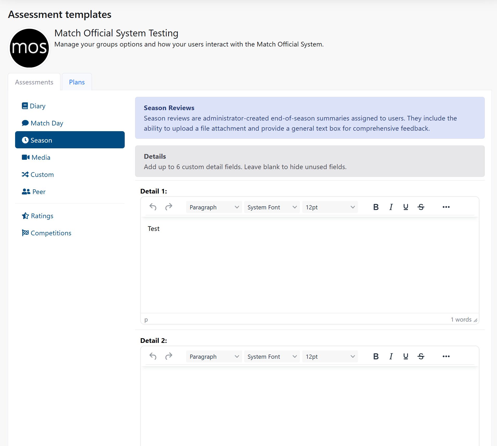
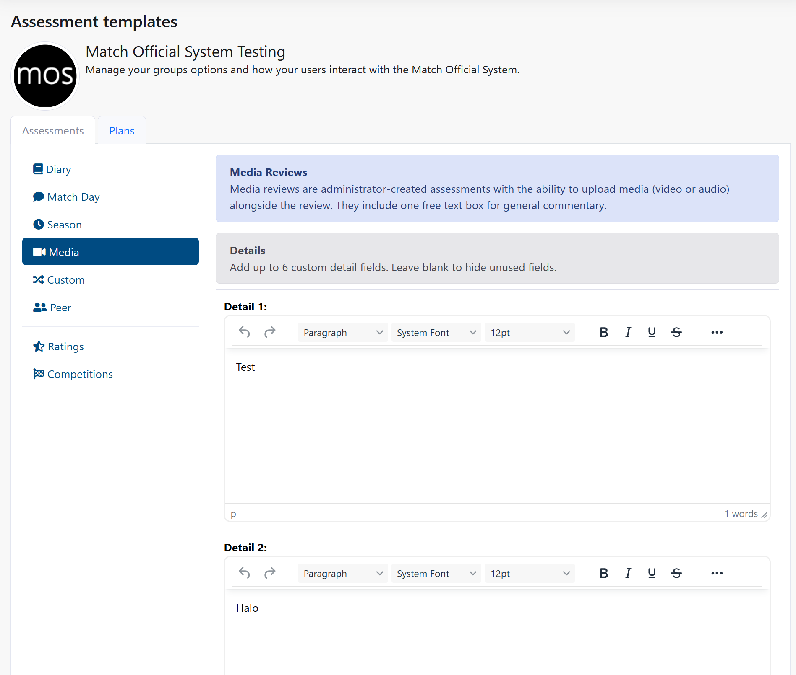
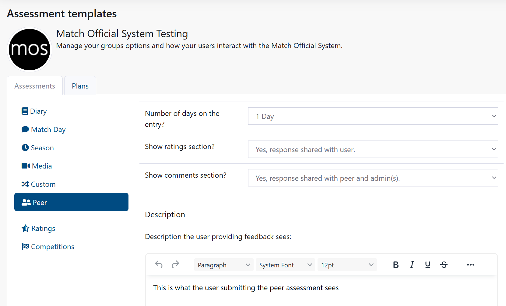
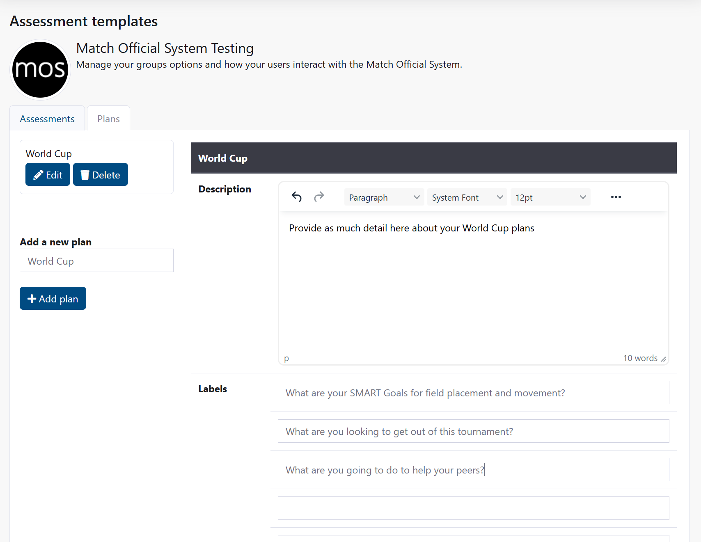

Assessment Templates
Access Level
Owner access required
Overview
Assessment Templates allow you to customise how your users complete different types of assessments. You can configure the layout, fields, ratings, comments, and instructions for diary entries, match day assessments, season reviews, media entries, custom assessments, and peer reviews.
Each assessment type can be tailored to your organisation's specific needs with custom descriptions, detail fields, and administrative instructions.
How to Access
- From the main menu, click Admin
- Click Assessment Templates
The page shows tabs for Assessments and Plans. Assessment Templates are under the Assessments tab.
Before You Start
- You must have administrator access
- Changes to templates apply to all new assessments created after the changes
- Existing assessments keep their original template format
- You can have up to 20 rating options and 10 comment fields per assessment type
- All text fields support formatted text with descriptions
Template Archiving and Historical Data
When you modify a template, the previous version is automatically archived to keep historical data intact for accurate reporting. However, frequently changing templates can create many archived versions and impact your experience seeing all the data in one view/snapshot.
Best practice: Design your templates carefully before implementation. Make changes sparingly to avoid breaking up your datasets for reporting. If you need a significantly different template, consider waiting until the end of season/year before changing as to avoid a break in reporting over that period.
Assessments Tab
The Assessments tab contains templates for six assessment types. Each can be customised independently.
Diary Template
Diary entries are day-by-day assessments created by users.

Configure diary days:
- Under the Diary tab, find "Number of days on the entry?"
- Select 1 to 5 days from the dropdown
- Users can enter observations for each selected day
Control user access to diary features:
- "Allow users to request review?" - Set to Yes or No
- "User can see ratings section?" - Set to Yes or No
- "User can see comments section?" - Set to Yes or No
Configure administrator visibility:
- "Admin ratings section?" - Select:
- Yes, response shared with user - Admins can rate and users see the ratings
- Yes, response not shared with user - Admins can rate but users don't see them
- No, cannot access - Admins cannot see user responses
- "Admin comments section?" - Select same three options
Add descriptions for users:
- In the "Diary description the user sees" field, enter text that explains how to complete the diary
- In the "Diary description the administrator sees" field, enter guidance for admins reviewing diaries
- In the "Diary description the user sees when reviewed" field, enter what users see after their diary is reviewed
Add custom detail fields:
Diary entries include three hardcoded fields that are always present:
- Team A - First team name (autocomplete enabled)
- Team B - Second team name (autocomplete enabled)
- Venue - Location of the diary entry (autocomplete enabled)
These three fields automatically provide suggestions as users type, based on previously used teams and venues in your group. Users can select from suggestions or enter a new name.
You can add up to 6 additional custom detail fields (Detail 1 through Detail 6):
- Under "Details" section, you see 6 detail fields available
- For each detail field, enter:
- A field label (e.g., "Objectives achieved")
- Instructions for users
- Leave blank to hide the field
- Each detail field becomes a section in the diary entry form
Overall comment box for reviews:
When a diary is reviewed by an administrator or reviewer, they can enter feedback in: - Ratings section - Individual ratings for specific performance areas - Comments section - Individual comments for each comment field - Overall comment box - A free-text box for general feedback that's not tied to any specific field
Users see all admin feedback after the review is completed.
Save your changes:
- After all changes, click Save assessment design at the bottom
- Result: New diary entries show your updated template
Match Day Template
Match day assessments are observations about specific matches or events.

Configure match day days:
- Under the Match Day tab, find "Number of days on the entry?"
- Select 1 to 5 days from the dropdown
Control ratings and comments:
- "Show ratings section?" - Select:
- Yes, response shared with user - Visible to users
- Yes, response not shared with user - Admin only
- No - Not shown
- "Show comments section?" - Select same three options
Add descriptions:
- In "Match Day description for the administrators" field, enter admin guidance
- In "Match Day description the user sees when submitted" field, enter what users see after submission
Add detail fields:
Match day assessments include three hardcoded fields that are always present: - Team A - First team name (autocomplete enabled) - Team B - Second team name (autocomplete enabled) - Venue - Location of the match (autocomplete enabled)
These three fields automatically provide suggestions as users type, based on previously used teams and venues in your group.
You can add up to 6 additional custom detail fields (Detail 1 through Detail 6):
- Enter labels for each custom detail field
- Leave blank to hide a field
- Common examples:
- Detail 1: "In-game decisions"
- Detail 2: "Communication"
- Detail 3: "Positioning"
- Detail 4: "Game awareness"
- Detail 5: "Player management"
- Detail 6: "Overall performance"
Overall comment box for reviews:
When a match day assessment is reviewed, reviewers can enter: - Specific ratings and comments for individual fields - An overall comment box for general feedback on the match assessment
Save your changes:
- Click Save assessment design
Season Template
Season templates are for longer-term seasonal reviews or summaries.

Add detail fields:
- Enter labels and instructions for all 6 detail fields available
- Examples:
- Detail 1: Seasonal achievements
- Detail 2: Areas for development
- Detail 3: Goals for next season
- Detail 4: Performance highlights
- Detail 5: Learning outcomes
- Detail 6: Additional comments
Save your changes:
- Click Save assessment design
Media Template
Media templates are for entries containing video, image, or other media content.

Add detail fields:
Media assessments include two hardcoded fields that are always present: - Team A - First team name (autocomplete enabled) - Team B - Second team name (autocomplete enabled)
These fields automatically provide suggestions as users type, based on previously used teams in your group.
You can also add labels for all 6 detail fields:
- Enter labels for detail fields you want to use
- Leave blank to hide unused detail fields
- Examples:
- Detail 1: Media description
- Detail 2: Key moments
- Detail 3: Analysis
- Detail 4: Technical aspects
- Detail 5: Performance feedback
- Detail 6: Recommendations
Save your changes:
- Click Save assessment design
Custom Template
Custom templates are for unique assessment types specific to your organisation.
Add detail fields:
- Enter labels for all 6 custom detail fields
- Customise these fields for your specific needs
Save your changes:
- Click Save assessment design
Peer Template
Peer assessments allow officials to review each other.

Configure peer days:
- Under the Peer tab, find "Number of days on the entry?"
- Select 1 to 5 days
Control ratings and comments:
- "Show ratings section?" - Select visibility level
- "Show comments section?" - Select visibility level
Add descriptions:
- In "Peer description for the administrators" field, enter admin guidance
- In "Peer description the user sees when submitted" field, enter user-facing text
Add detail fields:
Peer assessments include three hardcoded fields: - Peer name - Name of the person being reviewed - Event/Match - The event or match being assessed - Date - Date of the event
You can add up to 6 additional custom detail fields (Detail 1 through Detail 6):
- Enter labels for each custom detail field
- Examples:
- Detail 1: "Technical competency"
- Detail 2: "Decision making"
- Detail 3: "Communication"
- Detail 4: "Positioning and movement"
- Detail 5: "Game awareness"
- Detail 6: "Match intensity"
Overall comment box for peer reviews:
When a peer assessment is submitted, the reviewer can enter: - Individual ratings and comments for each field - An overall comment box for general feedback about the peer
Save your changes:
- Click Save assessment design
Plans Tab
The Plans tab contains templates for plan-type entries that users create for development and goal planning.

Plans follow a similar structure to assessments with customisable detail fields and comment sections. Configure plan templates in the same way as assessments by:
- Clicking the Plans tab at the top of the Assessment Templates page
- Selecting each plan type from the left sidebar
- Adding custom detail fields and descriptions
- Configuring visibility and permissions
- Clicking Save to apply changes
Plans are typically used for: - Development goals and planning - Performance improvement plans - Seasonal planning - Personal development objectives
Ratings
Create custom rating scales used across your assessments. These appear as options when admins and users complete assessments.

View all ratings:
- Click the Ratings tab
- You see a table of all available ratings for your group
Add a new rating:
- In the "Add a new rating" section, enter a rating option (e.g., "Excellent", "Good", "Needs Improvement")
- Click Add rating
- The rating is available in all assessment forms
Edit a rating:
- Click Edit next to the rating
- Change the rating text
- Click Update
Delete a rating:
- Click Delete next to the rating
- The rating is removed from all future assessments
Competitions
Create a list of competitions or events for your group. These can be referenced in assessments and reports.

View all competitions:
- Click the Competitions tab
- You see a table of all competitions
Add a new competition:
- In the "Add a new competition" section, enter the competition name
- Click Add competition
- The competition is available for selection in assessment entries
Edit a competition:
- Click Edit next to the competition
- Change the competition name and rest days if needed
- Click Update
Delete a competition:
- Click Delete next to the competition
- The competition is removed from the system
Ratings and Comments Configuration
Each assessment type can have customised rating scales and comment fields. These are configured separately for each assessment type.
For Diary assessments:
- Scroll to the Diary template section
- You see 20 rating options (Rating 1 through Rating 20)
- For each rating option, enter the rating label (e.g., "Positioning", "Decision making", "Communication")
- Below the ratings, enter 10 comment field labels (Comment 1 through Comment 10)
- For each comment field, enter a label and description
- Examples:
- Comment 1: Strengths
- Comment 2: Areas for improvement
- Comment 3: Development goals
Apply the same process for:
- Match Day assessments (ratings and comments)
- Other assessment types that support ratings and comments
Save all changes:
- Click Save assessment design at the bottom of the page
- Result: Your custom ratings and comments appear in all new assessments
Common Tasks
Create a custom diary template for your organisation
- Navigate to Assessment Templates
- Click the Assessments tab, then Diary
- Set the number of days (e.g., 3 days)
- Enable ratings and comments for both users and admins
- Enter a description for users: "Complete your daily assessment including key observations, decisions, and areas for improvement"
- Enter admin description: "Review the diary entry and provide constructive feedback using the ratings and comments sections"
- For Detail 1: Enter "Key decisions"
- For Detail 2: Enter "Performance observations"
- For Detail 3: Enter "Areas for development"
- Leave Details 4-6 blank to reduce form complexity
- Click Save assessment design
Set up match day assessments with specific fields
- Go to Assessment Templates
- Click the Assessments tab, then Match Day
- Set number of days to 1
- Enable ratings but not comments (user view)
- Enable both for admin view
- Add detail fields:
- Detail 1: "Pre-match preparation"
- Detail 2: "Game management decisions"
- Detail 3: "Communication with players"
- Detail 4: "Positioning and movement"
- Detail 5: "Decisions and interpretations"
- Detail 6: "Post-match reflection"
- Click Save assessment design
Create a complete rating scale for assessments
- Go to Assessment Templates
- Click the Ratings tab
- Add these ratings one by one:
- "Excellent - Far exceeds expectations"
- "Very Good - Exceeds expectations"
- "Good - Meets expectations"
- "Satisfactory - Meets most expectations"
- "Needs improvement - Below expectations"
- "Not assessed"
- Each rating is now available in all assessment forms
Customise comment fields for peer reviews
- Go to Assessment Templates
- Click the Assessments tab, then Peer
- In the ratings section, enter these comment labels:
- Comment 1: "Technical competency"
- Comment 2: "Communication skills"
- Comment 3: "Decision making"
- Comment 4: "Positioning and movement"
- Comment 5: "Game awareness"
- Comment 6: "Engagement with players"
- Comment 7: "Authority and control"
- Comment 8: "Areas of excellence"
- Comment 9: "Development areas"
- Comment 10: "Overall feedback"
- Click Save assessment design
Set up season reviews with custom detail fields
- Go to Assessment Templates
- Click the Assessments tab, then Season
- Enter these detail fields:
- Detail 1: "Season summary"
- Detail 2: "Key achievements"
- Detail 3: "Performance highlights"
- Detail 4: "Areas for development"
- Detail 5: "Goals for next season"
- Detail 6: "Professional development plan"
- Click Save assessment design
Field Descriptions
Assessment Template Fields
Number of days on the entry
- Determines how many day sections users see (1-5 days)
- Each day has a separate text entry area
Allow users to request review (Diary only)
- When enabled: Users can request a review from an administrator
- When disabled: Users cannot request reviews
User can see ratings section
- Yes: Users see rating options
- No: Users don't see ratings (admin only)
User can see comments section
- Yes: Users see comment fields
- No: Users don't see comments (admin only)
Admin ratings section
- Yes, response shared with user: Admin ratings visible to users
- Yes, response not shared with user: Admin ratings hidden from users
- No, cannot access: Admins cannot rate
Admin comments section
- Yes, response shared with user: Admin comments visible to users
- Yes, response not shared with user: Admin comments hidden from users
- No, cannot access: Admins cannot comment
Descriptions
- User description: Appears when users create or edit entries
- Admin description: Appears when admins review entries
- Review description: Appears to users after they've been reviewed
Detail 1 through Detail 6
- Custom fields for organisation-specific information
- Enter the field label to show the field
- Leave blank to hide the field
Troubleshooting
Changes to assessment template not appearing
Symptoms
- You modified a template but existing assessments don't show changes
- New assessments show old format
How to fix
- Go back to Assessment Templates
- Verify you clicked Save assessment design
- Clear your browser cache
- Create a new assessment and check if the template applied
- Existing assessments keep their original format; only new ones use updated templates
Common causes
- Forgot to save changes
- Browser cache showing old version
- Changes apply only to new assessments, not existing ones
Rating not appearing in assessment form
Symptoms
- You added a rating but users don't see it
- Rating selection dropdown is missing
How to fix
- Go to Assessment Templates
- Click the Ratings tab
- Verify the rating appears in the table
- If missing, add it again by entering the rating name and clicking Add rating
- Go back to the assessment form and refresh the page
Common causes
- Rating wasn't saved
- Browser cache issue
Detail fields not appearing in the form
Symptoms
- You entered detail field labels but they don't show in the assessment form
- Form appears incomplete
How to fix
- Go to Assessment Templates
- Click the relevant assessment type (Diary, Match Day, etc.)
- Verify you entered text in the Detail fields (Details 1-6)
- Check that you clicked Save assessment design
- Create a new assessment and verify the fields appear
Common causes
- Detail fields were left blank (they're hidden when empty)
- Changes weren't saved
- Browser cache
Cannot save assessment design
Symptoms
- Error message when you click Save assessment design
- Page doesn't save changes
How to fix
- Verify you have administrator access
- Check that you've entered valid information in all fields
- Try saving again
- If the problem continues, check browser console for errors
- Contact your system administrator
Common causes
- Invalid text in description fields
- Browser compatibility issue
- Administrator access expired
Related Pages
- Group Settings - Configure overall group settings
- User Management - Manage users